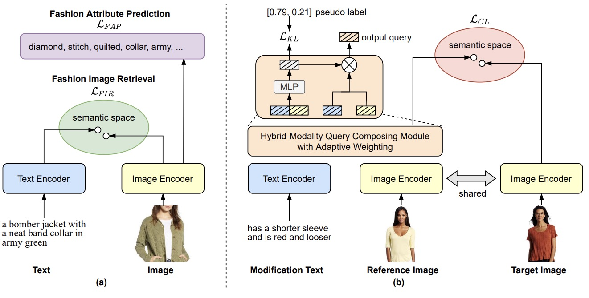
Progressive Learning for Image Retrieval with Hybrid-Modality Queries
Yida Zhao, Yuqing Song, Qin Jin
SIGIR, 2022.
abstract
Image retrieval with hybrid-modality queries, also known as composing text and image for image retrieval (CTI-IR), is a retrieval task where the search intention is expressed in a more complex query format, involving both vision and text modalities. For example, a target product image is searched using a reference product image along with text about changing certain attributes of the reference image as the query. It is a more challenging image retrieval task that requires both semantic space learning and cross-modal fusion. Previous approaches that attempt to deal with both aspects achieve unsatisfactory performance. In this paper, we decompose the CTI-IR task into a three-stage learning problem to progressively learn the complex knowledge for image retrieval with hybrid-modality queries. We first leverage the semantic embedding space for open-domain image-text retrieval, and then transfer the learned knowledge to the fashion-domain with fashion-related pre-training tasks. Finally, we enhance the pre-trained model from single-query to hybrid-modality query for the CTI-IR task. Furthermore, as the contribution of individual modality in the hybrid-modality query varies for different retrieval scenarios, we propose a self-supervised adaptive weighting strategy to dynamically determine the importance of image and text in the hybrid-modality query for better retrieval. Extensive experiments show that our proposed model significantly outperforms state-of-the-art methods in the mean of Recall@K by 24.9% and 9.5% on the Fashion-IQ and Shoes benchmark datasets respectively.

Image Difference Captioning with Pre-Training and Contrastive Learning
Linli Yao, Weiying Wang, Qin Jin
AAAI, 2022.
abstract slide code
The Image Difference Captioning (IDC) task aims to describe
the visual differences between two similar images with natural language. The major challenges of this task lie in two aspects: 1) fine-grained visual differences that require learning
stronger vision and language association and 2) high-cost of
manual annotations that leads to limited supervised data. To
address these challenges, we propose a new modeling framework following the pre-training-finetuning paradigm. Specifically, we design three self-supervised tasks and contrastive
learning strategies to align visual differences and text descriptions at a fine-grained level. Moreover, we propose a
data expansion strategy to utilize extra cross-task supervision
information, such as data for fine-grained image classification, to alleviate the limitation of available supervised IDC
data. Extensive experiments on two IDC benchmark datasets,
CLEVR-Change and Birds-to-Words, demonstrate the effectiveness of the proposed modeling framework. The codes and
models will be released at https://github.com/yaolinli/IDC.
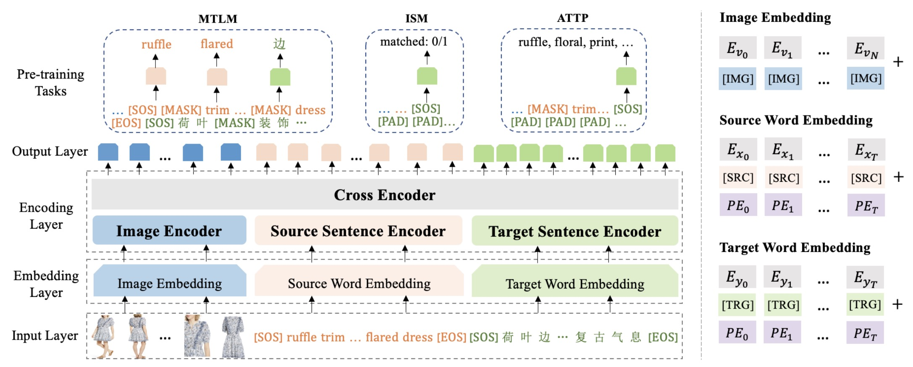
Product-oriented Machine Translation with Cross-modal Cross-lingual Pre-training
Yuqing Song, Shizhe Chen, Qin Jin, Wei Luo, Jun Xie, and Fei Huang
ACM Multimedia, 2021.
abstract slide code
Translating e-commercial product descriptions, a.k.a product-oriented
machine translation (PMT), is essential to serve e-shoppers all over
the world. However, due to the domain specialty, the PMT task is
more challenging than traditional machine translation problems.
Firstly, there are many specialized jargons in the product description, which are ambiguous to translate without the product image.
Secondly, product descriptions are related to the image in more
complicated ways than standard image descriptions, involving various visual aspects such as objects, shapes, colors or even subjective
styles. Moreover, existing PMT datasets are small in scale to support
the research. In this paper, we first construct a large-scale bilingual
product description dataset called Fashion-MMT, which contains
over 114k noisy and 40k manually cleaned description translations
with multiple product images. To effectively learn semantic alignments among product images and bilingual texts in translation,
we design a unified product-oriented cross-modal cross-lingual
model (UPOC2
) for pre-training and fine-tuning. Experiments on
the Fashion-MMT and Multi30k datasets show that our model significantly outperforms the state-of-the-art models even pre-trained on
the same dataset. It is also shown to benefit more from large-scale
noisy data to improve the translation quality. We will release the
dataset and codes at https://github.com/syuqings/Fashion-MMT.
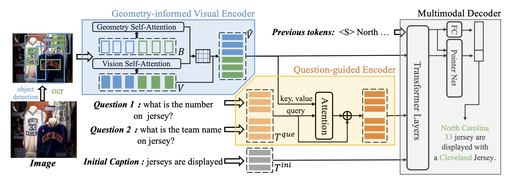
Question-controlled Text-aware Image Captioning
Anwen Hu, Shizhe Chen, Qin Jin
ACM Multimedia, 2021.
abstract slide code
For an image with multiple scene texts, different people may be interested in different text information. Current text-aware image captioning models are not able to generate distinctive captions according to various information needs. To explore how to generate personalized text-aware captions, we define a new challenging task, namely Question-controlled Text-aware Image Captioning (Qc-TextCap). With questions as control signals, this task requires models to understand questions, find related scene texts and describe them together with objects fluently in human language. Based on two existing text-aware captioning datasets, we automatically construct two datasets, ControlTextCaps and ControlVizWiz to support the task. We propose a novel Geometry and Question Aware Model (GQAM). GQAM first applies a Geometryinformed Visual Encoder to fuse region-level object features and region-level scene text features with considering spatial relationships. Then, we design a Question-guided Encoder to select the most relevant visual features for each question. Finally, GQAM generates a personalized text-aware caption with a Multimodal Decoder. Our model achieves better captioning performance and question answering ability than carefully designed baselines on both two datasets. With questions as control signals, our model generates more informative and diverse captions than the stateof-the-art text-aware captioning model. Our code and datasets are publicly available at https://github.com/HAWLYQ/Qc-TextCap.
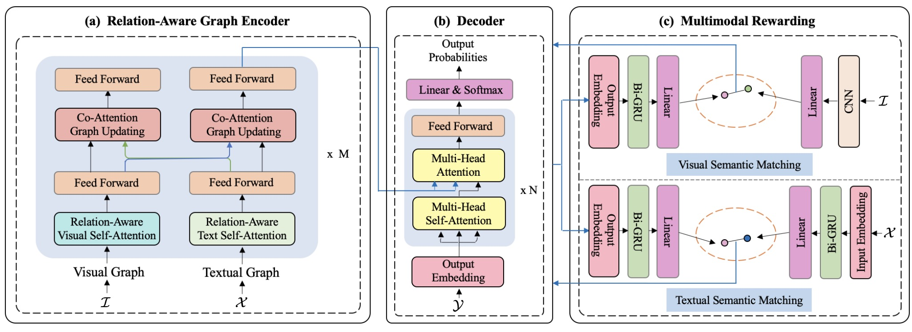
Enhancing Neural Machine Translation with Dual-Side Multimodal Awareness
Yuqing Song, Shizhe Chen, Qin Jin, Wei Luo, Jun Xie, and Fei Huang
IEEE Transactions on Multimedia, 2021.
abstract code
Multimodal machine translation (MMT) aims to translate a sentence in the source language into the target language with the context of an associated image. According to where the visual information is employed, previous approaches can be categorized into two types: directly injecting the visual information at the input side or exploiting it as a visual constraint at the objective side. In this work, we propose an IO-MMT model which exploits the visual assistance in dual sides to fully exploit the visual information for multimodal machine translation. It contains a relation-aware multimodal transformer to simultaneously exploit the objects and their spatial relationships in the image with a graph at the input-side and a novel visual assistance structure to further improve visual consistency of the translation at the objective-side. Experimental results under both normal setting and input degradation settings on the Multi30k benchmark dataset show that combining the visual assistance in dual sides consistently outperforms single-side MMT models and achieves the state-of-the-art results on EN-DE and EN-FR translation tasks. We will release the codes and models at https://github.com/syuqings/MMT.
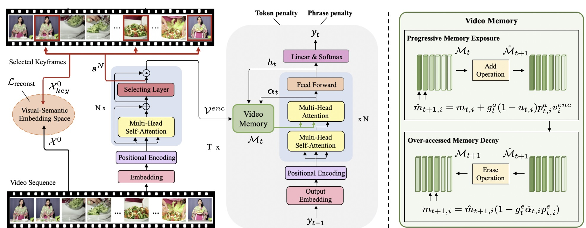
Towards Diverse Paragraph Captioning for Untrimmed Videos
Yuqing Song, Shizhe Chen, Qin Jin
CVPR, 2021.
abstract slide code
Video paragraph captioning aims to describe multiple
events in untrimmed videos with descriptive paragraphs.
Existing approaches mainly solve the problem in two steps:
event detection and then event captioning. Such two-step
manner makes the quality of generated paragraphs highly
dependent on the accuracy of event proposal detection
which is already a challenging task. In this paper, we
propose a paragraph captioning model which eschews the
problematic event detection stage and directly generates
paragraphs for untrimmed videos. To describe coherent
and diverse events, we propose to enhance the conventional
temporal attention with dynamic video memories, which
progressively exposes new video features and suppresses
over-accessed video contents to control visual focuses of
the model. In addition, a diversity-driven training strategy is proposed to improve diversity of paragraph on the
language perspective. Considering that untrimmed videos
generally contain massive but redundant frames, we further augment the video encoder with keyframe awareness to
improve efficiency. Experimental results on the ActivityNet
and Charades datasets show that our proposed model significantly outperforms the state-of-the-art performance on
both accuracy and diversity metrics without using any event
boundary annotations. Code will be released at https:
//github.com/syuqings/video-paragraph.
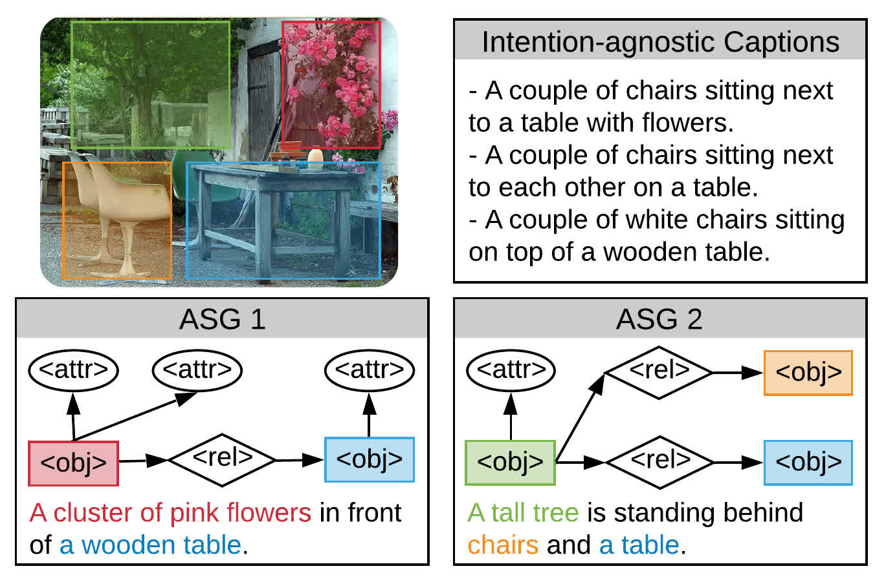
Say as You Wish: Fine-grained Control of Image Caption Generation with Abstract Scene Graphs
Shizhe Chen, Qin Jin, Peng Wang, Qi Wu
CVPR, 2020.
abstract code
Humans are able to describe image contents with coarse
to fine details as they wish. However, most image captioning models are intention-agnostic which cannot generate diverse descriptions according to different user intentions initiatively. In this work, we propose the Abstract
Scene Graph (ASG) structure to represent user intention
in fine-grained level and control what and how detailed
the generated description should be. The ASG is a directed graph consisting of three types of abstract nodes
(object, attribute, relationship) grounded in the image without any concrete semantic labels. Thus it is easy to obtain
either manually or automatically. From the ASG, we propose a novel ASG2Caption model, which is able to recognize user intentions and semantics in the graph, and therefore generate desired captions following the graph structure. Our model achieves better controllability conditioning on ASGs than carefully designed baselines on both VisualGenome and MSCOCO datasets. It also significantly
improves the caption diversity via automatically sampling
diverse ASGs as control signals. Code will be released at
https://github.com/cshizhe/asg2cap.
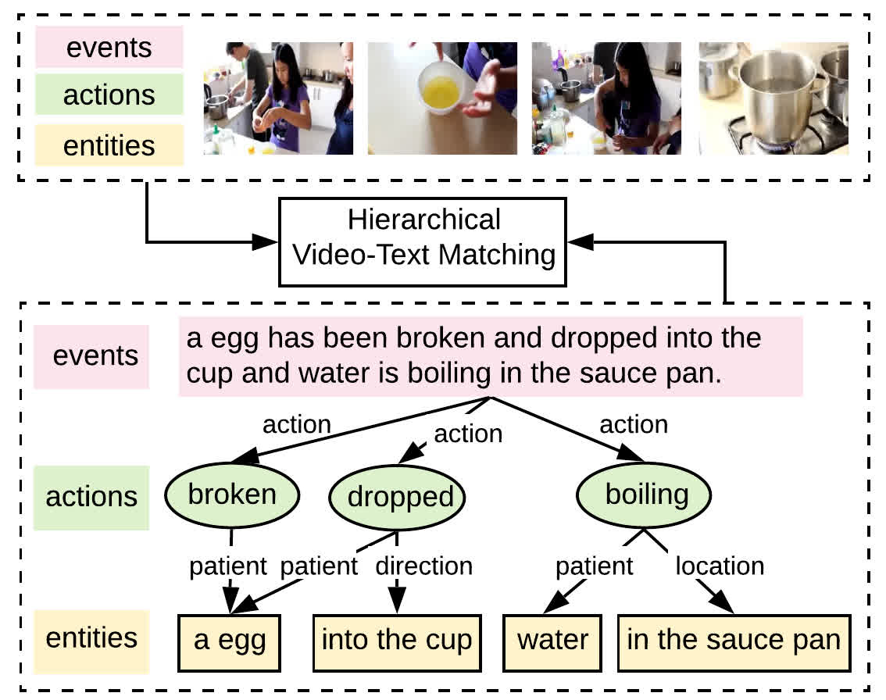
Fine-grained Video-Text Retrieval with Hierarchical Graph Reasoning
Shizhe Chen, Yida Zhao, Qin Jin, Qi Wu
CVPR, 2020.
abstract code
Cross-modal retrieval between videos and texts has attracted growing attentions due to the rapid emergence of videos on the web. The current
dominant approach is to learn a joint embedding space to measure cross-modal similarities. However, simple embeddings are insufficient
to represent complicated visual and textual details, such as scenes, objects, actions and their compositions. To improve fine-grained
video-text retrieval, we propose a Hierarchical Graph Reasoning (HGR) model, which decomposes video-text matching into global-to-local
levels. The model disentangles text into a hierarchical semantic graph including three levels of events, actions, entities, and generates
hierarchical textual embeddings via attention-based graph reasoning. Different levels of texts can guide the learning of diverse and
hierarchical video representations for cross-modal matching to capture both global and local details. Experimental results on three
video-text datasets demonstrate the advantages of our model. Such hierarchical decomposition also enables better generalization across
datasets and improves the ability to distinguish fine-grained semantic differences. Code will be released
at https://github.com/cshizhe/hgr_v2t.
VideoIC: A Video Interactive Comments Dataset and Multimodal Multitask Learning for Comments Generation
Weiying Wang, Jieting Chen, Qin Jin
ACM Multimedia, 2020.
abstract
Live video interactive commenting, a.k.a. danmaku, is an emerging
social feature on online video sites, which involves rich multimodal
information interaction among viewers. In order to support various
related research, we build a large scale video interactive comments
dataset called VideoIC, which consists of 4951 videos spanning 557
hours and 5 million comments. Videos are collected from popular
categories on the ‘Bilibili’ video streaming website. Comparing to
other existing danmaku datasets, our VideoIC contains richer and
denser comments information, with 1077 comments per video on average. High comment density and diverse video types make VideoIC
a challenging corpus for various research such as automatic video
comments generation. We also propose a novel model based on
multimodal multitask learning for comment generation (MML-CG),
which integrates multiple modalities to achieve effective comment
generation and temporal relation prediction. A multitask loss function is designed to train both tasks jointly in the end-to-end manner.
We conduct extensive experiments on both VideoIC and Livebot
datasets. The results prove the effectiveness of our model and reveal
some features of danmaku.
Visual Relation
Visual relationship detection is an intermediate image/video understanding task that detects two objects and classifies a predicate that explains the relationship between them.
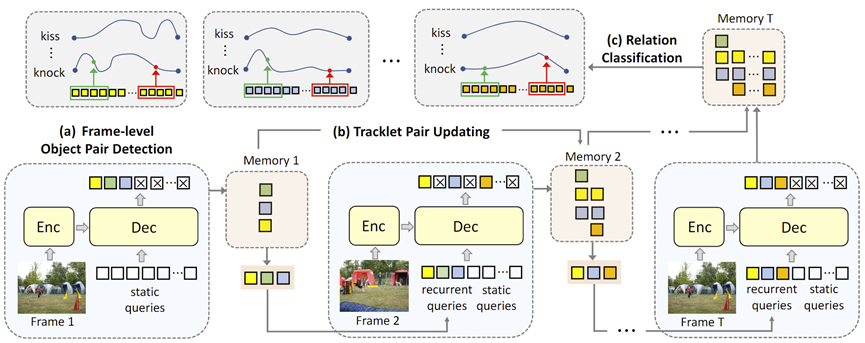
VRDFormer: End-to-End Video Visual Relation Detection with Transformers
Sipeng Zheng, Shizhe Chen, Qin Jin
CVPR, 2022.
abstract
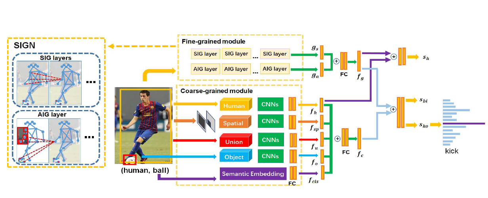
Skeleton-based Interactive Graph Network for Human Object Interaction Detection
Sipeng Zheng, Shizhe Chen, Qin Jin
ICME, 2020.
abstract
The human-object interaction detection (HOI) task aims to localize human and objects in an input image and predict their
relationships, which is essential for understanding human behaviors in complex scenes. Due to the human-centric nature of
the HOI task, it is beneficial to make use of human related knowledge such as human skeletons to infer fine-grained
human-object interactions. However, previous works simply embed skeletons via convolutional networks, which fail to capture
structured connections in human skeletons and ignore the object influence. In this work, we propose a Skeleton-based
Interactive Graph Network (SIGN) to capture fine-grained human-object interactions via encoding interactive graphs between
keypoints in human skeletons and object from spatial and appearance aspects. Experimental results demonstrate the
effectiveness of our SIGN model, which achieves significant improvement over baselines and outperforms other state-of-the-art
methods on two benchmarks.

Visual Relation Detection with Multi-Level Attention
Sipeng Zheng, Shizhe Chen, Qin Jin
ACM Multimedia, 2019.
abstract
Visual relations, which describe various types of interactions between two objects in the image, can provide
critical information for comprehensive semantic understanding of the image. Multiple cues related to the objects
can contribute to visual relation detection, which mainly include appearances, spacial locations and semantic
meanings. It is of great imporvr_zsptance to represent different cues and combine them effectively for visual relation
detection. However, in previous works, the appearance representation is simply realized by global visual
representation based on the bounding boxes of objects, which may not capture salient regions of the interaction
between two objects, and the different cue representations are equally concatenated without considering their
different contributions for different relations. In this work, we propose a multi-level attention visual relation
detection model (MLA-VRD), which generates salient appearance representation via a multi-stage appearance attention
strategy and adaptively combine different cues with different importance weighting via a multi-cue attention
strategy. Extensive experiment results on two widely used visual relation detection datasets, VRD and Visual Genome,
demonstrate the effectiveness of our proposed model which significantly outperforms the previous state-of-the-arts.
Our proposed model also achieves superior performance under the zero-shot learning condition, which is an important
ordeal for testing the generalization ability of visual relation detection models.
Affective Computing
Affective Computing aims to develop new technologies and theories that advance basic understanding of affect and its role in human experience. We focus on building systems that can percept and undertand human emotions through multiple modalities.
M3ED: Multi-modal Multi-scene Multi-label Emotional Dialogue Database
Jinming Zhao, Tenggan Zhang, Jingwen Hu, Yuchen Liu, Qin Jin, Xinchao Wang, Haizhou Li
ACL, 2022.
abstract code
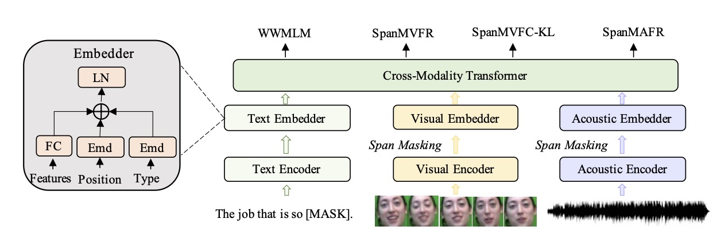
MEmoBERT: Pre-training Model with Prompt-based Learning for Multimodal Emotion Recognition
Jinming Zhao, Ruichen Li, Qin Jin, Xinchao Wang, Haizhou Li
ICASSP, 2022.
abstract code
Multimodal emotion recognition study is hindered by the
lack of labelled corpora in terms of scale and diversity, due
to the high annotation cost and label ambiguity. In this
paper, we propose a pre-training model MEmoBERT for
multimodal emotion recognition, which learns multimodal
joint representations through self-supervised learning from
large-scale unlabeled video data that come in sheer volume.
Furthermore, unlike the conventional “pre-train, finetune”
paradigm, we propose a prompt-based method that reformulates the downstream emotion classification task as a masked
text prediction one, bringing the downstream task closer
to the pre-training. Extensive experiments on two benchmark datasets, IEMOCAP and MSP-IMPROV, show that
our proposed MEmoBERT significantly enhances emotion
recognition performance.
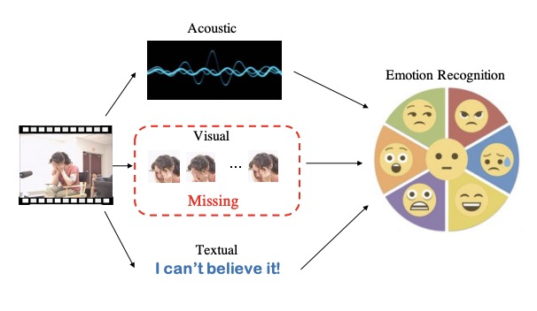
Missing Modality Imagination Network for Emotion Recognition with Uncertain Missing Modalities
Jinming Zhao, Ruichen Li, Qin Jin
ACL, 2021.
abstract code
Multimodal fusion has been proved to improve
emotion recognition performance in previous
works. However, in real-world applications,
we often encounter the problem of missing
modality, and which modalities will be missing is uncertain. It makes the fixed multimodal
fusion fail in such cases. In this work, we propose a unified model, Missing Modality Imagination Network (MMIN), to deal with the
uncertain missing modality problem. MMIN
learns robust joint multimodal representations,
which can predict the representation of any
missing modality given available modalities
under different missing modality conditions.
Comprehensive experiments on two benchmark datasets demonstrate that the unified
MMIN model significantly improves emotion
recognition performance under both uncertain
missing-modality testing conditions and fullmodality ideal testing condition. The code
will be available at https://github.com/AIM3-
RUC/MMIN.
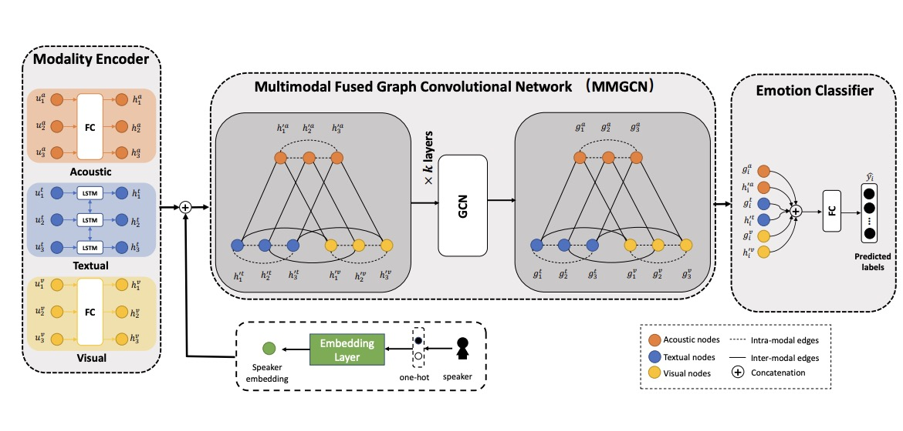
MMGCN: Multimodal Fusion via Deep Graph Convolution Network for Emotion Recognition in Conversation
Jingwen Hu, Yuchen Liu, Jinming Zhao, Qin Jin
ACL, 2021.
abstract
Emotion recognition in conversation (ERC)
is a crucial component in affective dialogue
systems, which helps the system understand
users’ emotions and generate empathetic responses. However, most works focus on modeling speaker and contextual information primarily on the textual modality or simply leveraging multimodal information through feature concatenation. In order to explore a
more effective way of utilizing both multimodal and long-distance contextual information, we propose a new model based on multimodal fused graph convolutional network,
MMGCN, in this work. MMGCN can not only
make use of multimodal dependencies effectively, but also leverage speaker information
to model inter-speaker and intra-speaker dependency. We evaluate our proposed model
on two public benchmark datasets, IEMOCAP
and MELD, and the results prove the effectiveness of MMGCN, which outperforms other
SOTA methods by a significant margin under
the multimodal conversation setting.
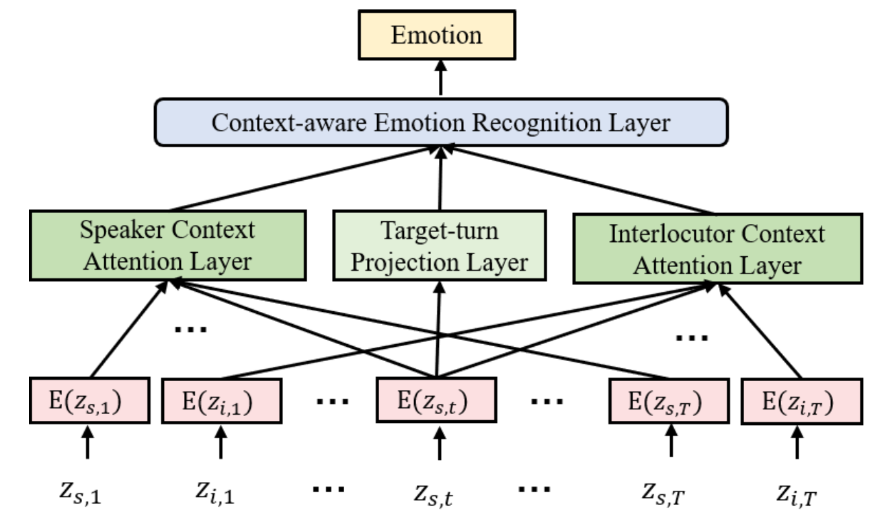
Speech Emotion Recognition in Dyadic Dialogues with Attentive Interaction Modeling.
Jinming Zhao, Shizhe Chen, Jingjun Liang, Qin Jin
INTERSPEECH, 2019.
abstract
In dyadic human-human interactions, a more complex interaction scenario, a person's emotional state can be
influenced by both self emotional evolution and the interlocutor's behaviors. However, previous speech emotion
recognition studies infer the speaker's emotional state mainly based on the targeted speech segment without
considering the above two contextual factors. In this paper, we propose an Attentive Interaction Model (AIM)
to capture both self- and interlocutor-context to enhance the speech emotion recognition in the dyadic dialog.
The model learns to dynamically focus on long-term relevant contexts of the speaker and the interlocutor via the
self-attention mechanism and fuse the adaptive context with the present behavior to predict the current emotional
state. We carry out extensive experiments on the IEMOCAP corpus for dimensional emotion recognition in arousal and
valence. Our model achieves on par performance with baselines for arousal recognition and significantly outperforms
baselines for valence recognition, which demonstrates the effectiveness of the model to select useful con- texts for
emotion recognition in dyadic interactions.
Music Intelligent Computing
Music Intelligent Computing aims to automatically undertand and generate music by artificial intelligent systems. We focus on building automatic melody and lyric generation systems and automatic singing synthesis systems.
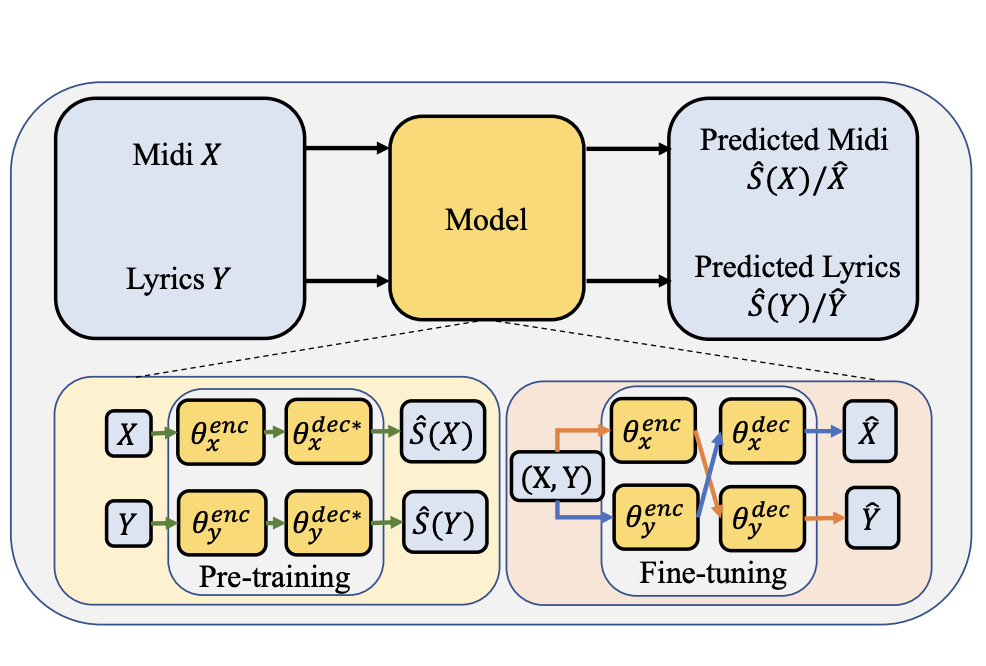
Training strategies for automatic song writing: a unified framework perspective
Tao Qian, Jiatong Shi, Shuai Guo, Peter Wu, Qin Jin
ICASSP, 2022.
abstract slide
The neural network (NN) based singing voice synthesis (SVS)
systems require sufficient data to train well and are are prone to
over-fitting due to data scarcity. However, we often encounter data
limitation problem in building SVS systems because of high data acquisition and annotation cost, . In this work, we propose a Perceptual
Entropy (PE) loss derived from a psycho-acoustic hearing model to
regularize the network. With a one-hour open-source singing voice
database, we explore the impact of the PE loss on various mainstream sequence-to-sequence models, including the RNN-based,
transformer-based, and conformer-based models. Our experiments
show that the PE loss can mitigate the over-fitting problem and
significantly improve the synthesized singing quality reflected in
objective and subjective evaluations.
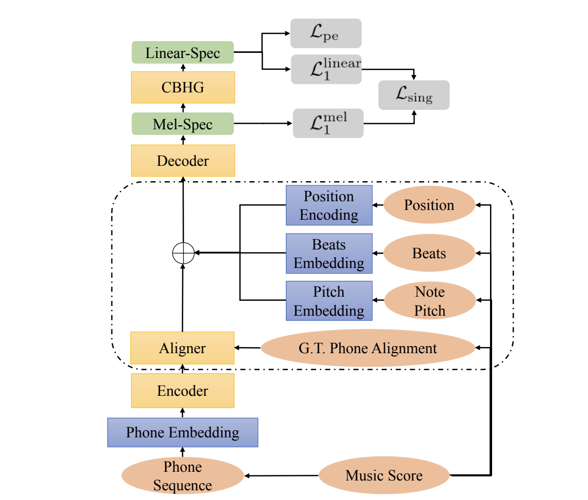
Sequence-To-Sequence Singing Voice Synthesis With Perceptual Entropy Loss
Jiatong Shi, Shuai Guo, Nan Huo, Yuekai Zhang, Qin Jin
ICASSP, 2021.
abstract
The neural network (NN) based singing voice synthesis (SVS)
systems require sufficient data to train well and are are prone to
over-fitting due to data scarcity. However, we often encounter data
limitation problem in building SVS systems because of high data acquisition and annotation cost, . In this work, we propose a Perceptual
Entropy (PE) loss derived from a psycho-acoustic hearing model to
regularize the network. With a one-hour open-source singing voice
database, we explore the impact of the PE loss on various mainstream sequence-to-sequence models, including the RNN-based,
transformer-based, and conformer-based models. Our experiments
show that the PE loss can mitigate the over-fitting problem and
significantly improve the synthesized singing quality reflected in
objective and subjective evaluations.